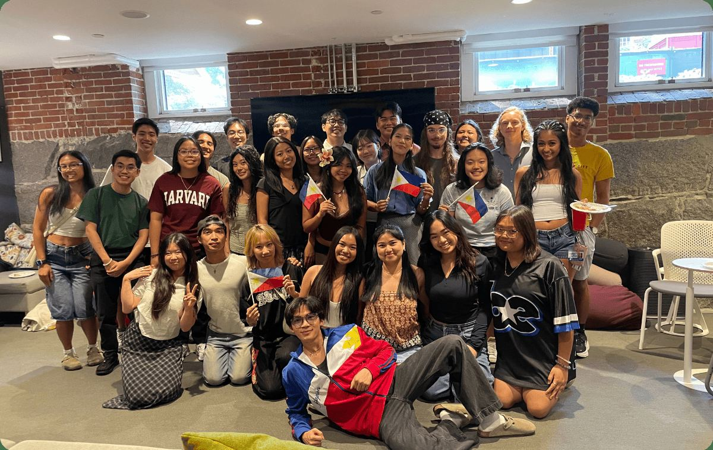
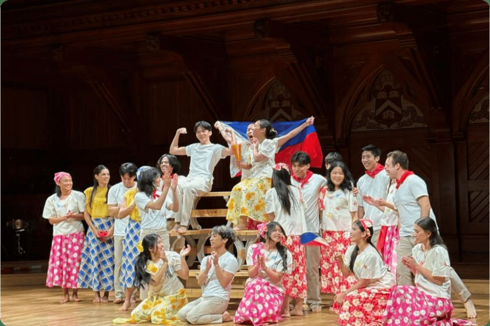
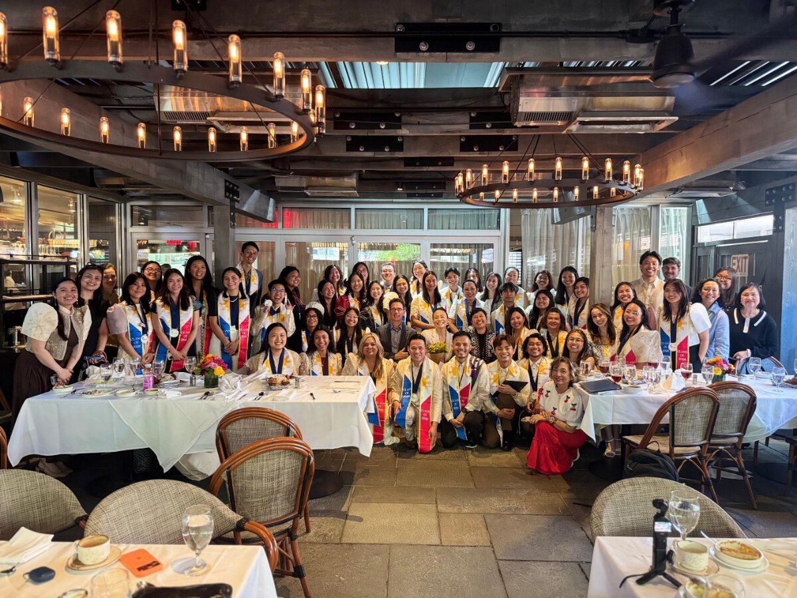
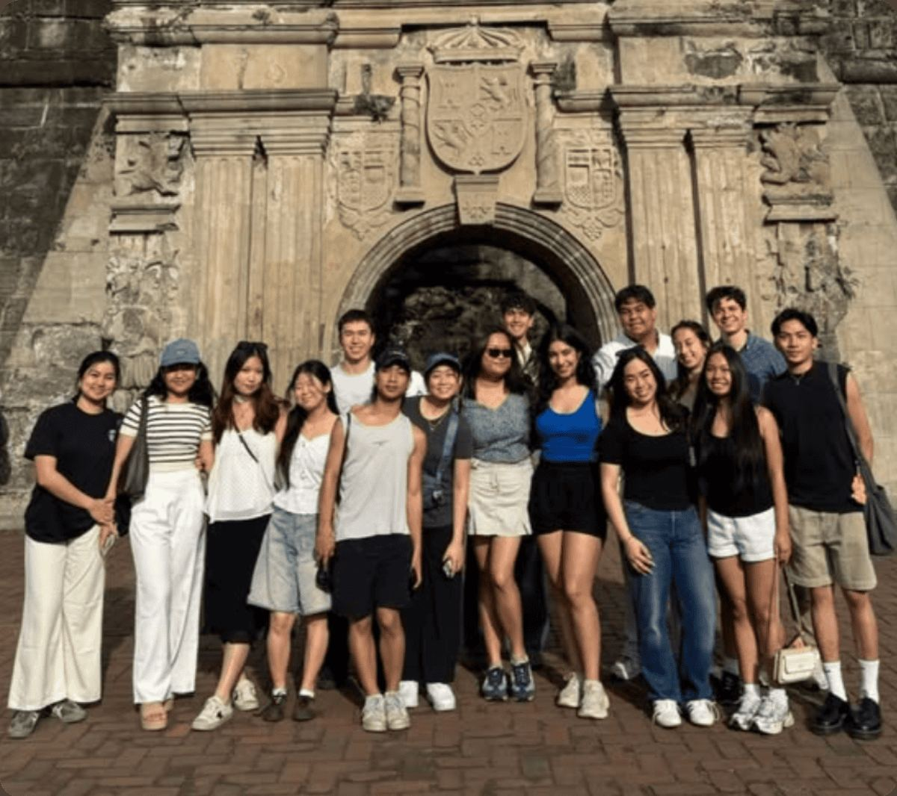
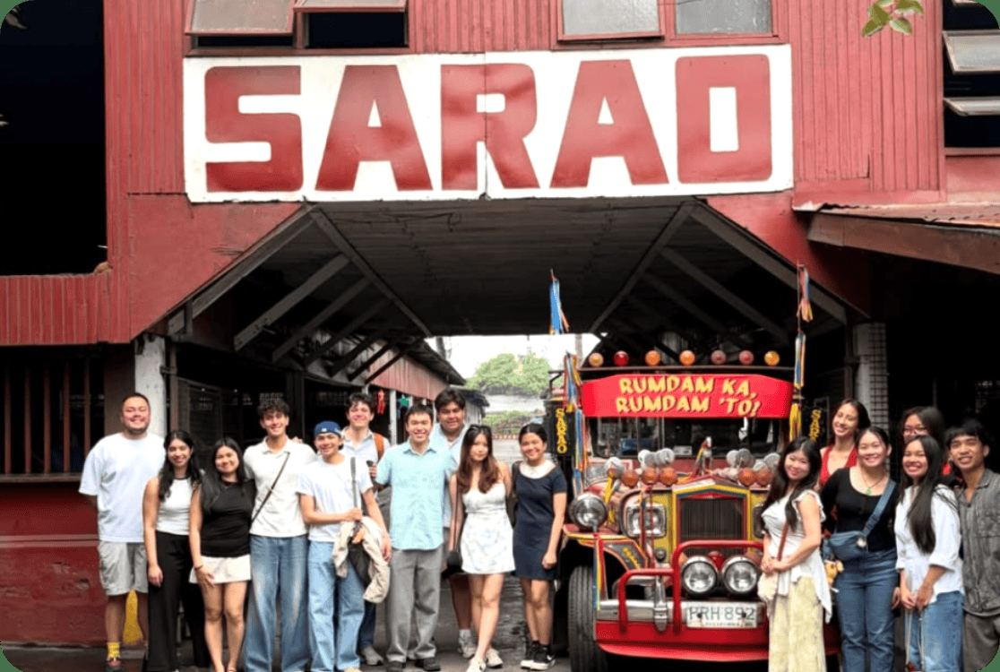
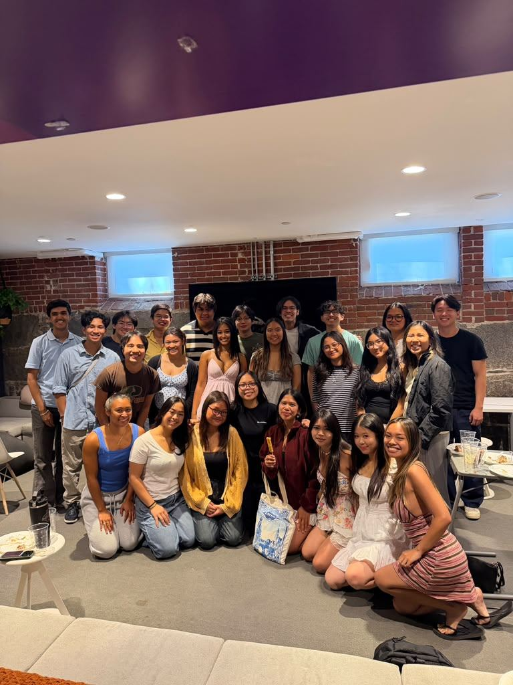
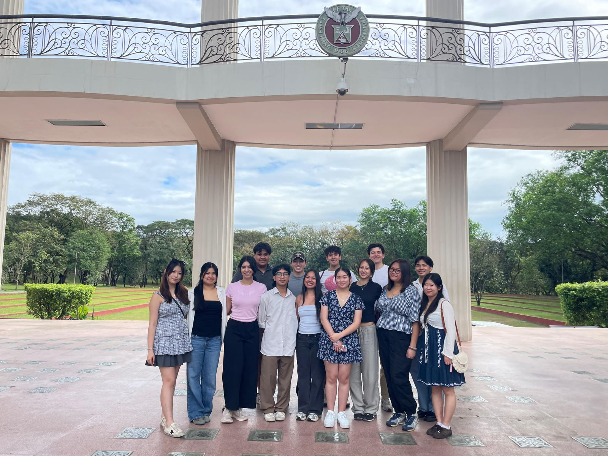
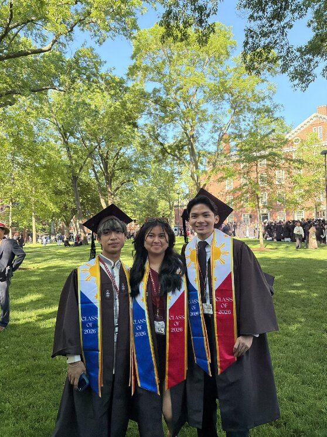
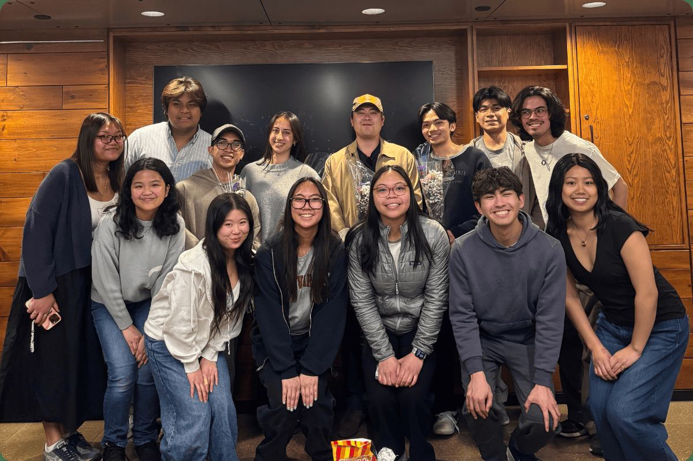
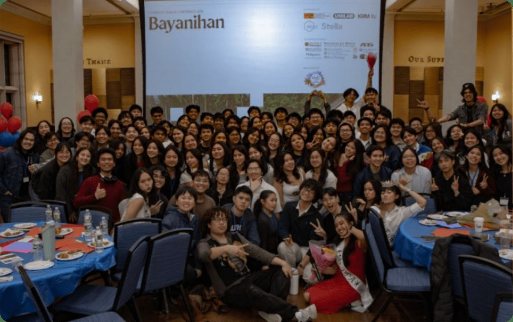

Welcome to the Pamilya.
We are a close-knit family of Filipinos, Filipino-Americans, and friends that celebrates and shares the vitality of Philippine culture and tradition with the Harvard community.
Culture, education, and service
From tinikling on the Cultural Rhythms stage to a service trip in Manila, here's how HPF spends the year.

Performances and pamilya
HPF members perform at several shows each year and attend events to promote Southeast Asian culture at Harvard.
See our performances →
Speakers and dialogue
HPF holds speaker events each year to promote dialogue and open discussion about issues that Filipinos face.
Meet our speakers →
J-Term trip to the Philippines
HPF organizes an annual service trip to the Philippines during J-Term. Find out how to apply and get involved.
Explore the trip →Spend January in the Philippines with HPF
Our J-Term trip is open to all Harvard College students. Thanks to the Harvard Asia Center, HCPG, and our alumni donors, we've returned to the Philippines again and again.

Moments from this year






Join the pamilya
Anyone can join HPF. Join our GroupMe to hear about brunches, study breaks, performances, and the next J-Term trip.